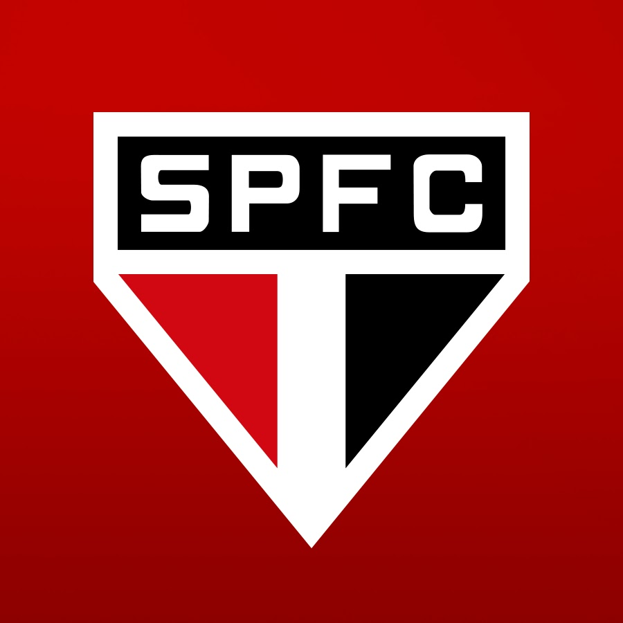

Apresentação Pessoal
Daniel Mazzaro
17 anos
interesses: futebol, jogos, carros e motos
INFO 3° ano
data:
Daniel Mazzaro
17 anos
interesses: futebol, jogos, carros e motos
Interesses na area de tecnologia: IA, Motagens de PC, Programação
objetivos profissionais: Me tornar um Dev Full stack e aprender a mecher com desenvolvimento de IAs

Os objetivos dessas atividades são testas nosso aprendizado sobre os conceitos basicos de html e treinar o uso das tags do html semantico